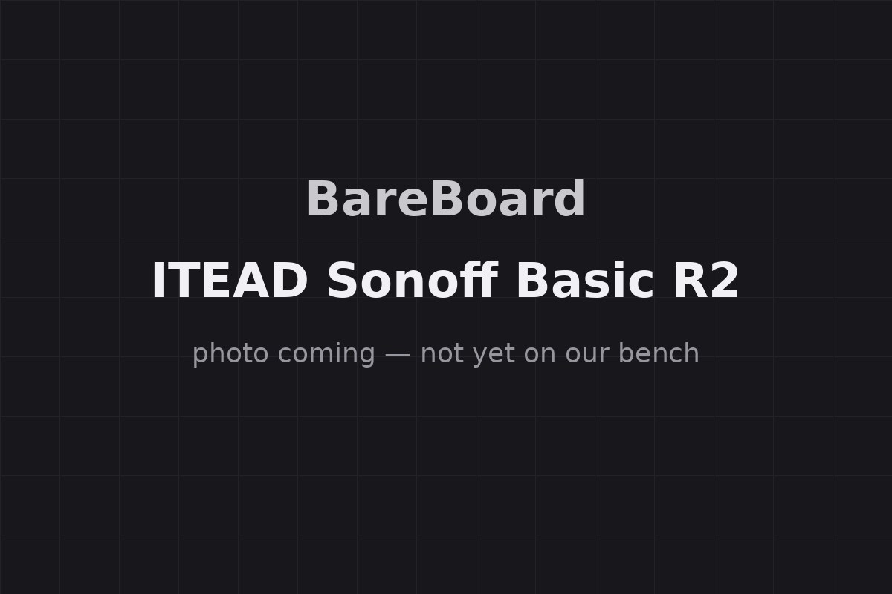

The Autopsy Report · Device #028
The Sonoff Basic R2
A five-dollar Wi-Fi switch that wires directly into mains power — and a case study in why the name on the box isn't always the board inside. Public-records edition: we haven't opened one yet.
What is this thing?
The ITEAD Sonoff Basic R2 is a Wi-Fi smart switch: a small inline module you wire between your mains power and an appliance, so you can turn that appliance on and off from a phone app, on a schedule, or by voice through Alexa or Google Assistant. The specs: 100–240 V AC in and out, up to 10 A load, 2.4 GHz 802.11b/g/n Wi-Fi, in an 88×39×24 mm flame-retardant (PC V0) shell. User manual
The original Sonoff Basic dates to 2016; the R2 is the revised board. It carries FCC ID 2APN5BASICR2. EDN teardown FCC filing
Whose box is this?
Not ours — not yet. No unit of this device is on our bench. We haven't bought one, opened one, photographed one's insides, or listened to one boot. Everything on this page comes from public records: an EDN hardware teardown, the ESPHome device database, the user manual, the FCC filing, and — because no freely-licensed photograph of this device exists — a placeholder card where the photo would go. When a unit lands on our bench, this report gets a second edition with our own photos, measurements, and boot log.
A note on mains voltage: this device switches wall power. Nothing on this page is installation advice. If you wire one of these, that work belongs to someone qualified — we document hardware, we don't do your electrician's job.
A short history
- 2016ITEAD Studio releases the original Sonoff Basic — a ~$5 ESP8266-based Wi-Fi switch that becomes a darling of the DIY home-automation crowd. EDN teardown
- 2018The revised board appears, labeled "Sonoff RF R2 POWER V1.0" — the R2. The layout changes and the silicon moves from the ESP8266 to Espressif's ESP8285. EDN teardown
- March 9, 2020The FCC original-equipment filing for 2APN5BASICR2 issues — dated 2020 despite the 2018 R2 labeling, a paperwork quirk worth knowing about. FCC filing
- 2020 – presentHardware keeps changing under the same product and FCC identity — community sources report ESP-family and even non-Espressif (BL602) variants shipping as "Basic R2." The name on the box no longer guarantees the board inside. ESPHome device database
The outside
A plain white inline module: screw terminals for mains in and mains out on the ends, a single button, and a Wi-Fi LED. No photo of ours exists yet — and no freely-licensed stock photo of this device exists on Wikimedia Commons that we could verify, so the card below is a placeholder until a unit reaches our bench.

The board
We haven't held this board ourselves, so this is the teardowns' account, not ours. EDN's teardown of the R2 revision shows a single board with a mix of through-hole and surface-mount parts: the Espressif ESP8285 Wi-Fi SoC (32-pin QFN) on top, and on the power side a CR1511-36 offline PWM controller plus a 1117-3.3 voltage regulator stepping mains-derived power down to the 3.3 V the logic needs. A single relay does the actual switching. EDN teardown
The revision warning, stated once more because it matters: EDN documented an ESP8285-based R2, but community sources report that later production kept the "Basic R2" name and FCC ID while changing the silicon — including other ESP-family parts and BL602-based variants. Any teardown that names a chip is evidence about that unit, not about every box labeled R2. EDN teardown ESPHome device database
Under the microscope: the chips
Because of the revision ambiguity above, this table names only what EDN documented on the specific R2 unit it tore down — treat every row as that board's bill of materials, not a universal one. Confirmed means a primary source verifies it. Likely means public hardware records agree, but we haven't verified it ourselves.
| Chip | What it does | How we know | Dig deeper |
|---|---|---|---|
| Espressif ESP8285 on the EDN-tested R2 unit |
The Wi-Fi SoC — Tensilica L106 32-bit MCU at 80 MHz (up to 160 MHz) with 1 MB of built-in SPI flash. Runs the switch's software and the radio. | Likely Identified on the R2 board EDN examined. Other R2-labeled units may differ — see the revision warning. | ESP8285 datasheet (third-party mirror) |
| CR1511-36 on the EDN-tested R2 unit |
Offline PWM controller — part of the AC-to-DC power supply. | Likely Marking reported by EDN on the examined unit. | EDN teardown |
| 1117-3.3 on the EDN-tested R2 unit |
3.3-V linear regulator feeding the logic. | Likely Marking reported by EDN on the examined unit. | EDN teardown |
Datasheet note: Espressif's official ESP8285 datasheet exists, but the copy we can link is a third-party mirror (labeled as such) — no manufacturer or archive.org copy was located. No datasheets were found for the CR1511-36 or the 1117-3.3 regulator as marked.
The government's file on this box
The Basic R2's FCC filing sits under FCC ID: 2APN5BASICR2, granted to Shenzhen Sonoff Technologies Co., Ltd. The original-equipment filing is dated March 9, 2020 — years after the 2018 R2 labeling, which tells you the paperwork and the product cycles don't always line up. FCC filing
What's in the file:
- Internal and external photos, the user manual, the test report, RF exposure paperwork, and the label — all public since March 9, 2020.
- Test data — 2.412–2.462 GHz operation with a listed conducted output around 190 mW.
- What's missing. The schematics, block diagram, and operational description are listed but not publicly available.
- Confidentiality: long-term confidentiality was requested; no short-term confidentiality — so nothing was held back past the grant date.
Browse the file yourself: filing page
Listening to it boot
We haven't — there is no unit on our bench, so there is no boot log, no serial capture, nothing. That section gets written the day one arrives.
Our rule for debug ports, whenever we do meet this hardware: we listen, we don't knock. Public sources document programming pads on ESP-based variants of this hardware family; if our future unit has them, we'll document their existence and location from what we can see — read-only, no firmware extraction, no bypass techniques, no procedures. The details of what's on our board await the bench, because the revision lottery means nobody else's board is a reliable map of ours.
What we found
The R2 is a product name, not a hardware definition. The same box name and FCC ID have covered ESP8266, ESP8285, other ESP-family parts, and BL602-based builds across production. For a $5 switch that's normal cost engineering — but it means every claim about "the" R2's internals needs a unit attached to it. Ours will get one when it arrives. EDN teardown ESPHome device database
The FCC filing is dated 2020 for a 2018 product. A small paperwork oddity, but the kind of thing that matters when you're trying to date hardware from its filings: the grant date is when the paperwork cleared, not when the product first shipped. FCC filing
What we didn't do
- This device is not on our bench. We have not disassembled one.
- We captured no boot log and ran no bench tests.
- We have not touched, extracted, modified, or shared this device's firmware — and this page contains no flashing or programming procedures.
- We have not probed any debug or programming interface on it.
- We did not treat any single teardown's chip list as universal across the R2 name.
- No freely-licensed photo of this device exists on Wikimedia Commons; the card above is our placeholder, not a product photo.
By the numbers
- Model: ITEAD Sonoff Basic R2 (original Basic: 2016)
- FCC ID: 2APN5BASICR2 (original filing March 9, 2020)
- Switching: 100–240 V AC, up to 10 A, single relay
- Radio: 2.4 GHz 802.11b/g/n (listed conducted output ~190 mW)
- Silicon (EDN's unit): Espressif ESP8285 — later units vary
- Size: 88×39×24 mm, PC V0 flame-retardant shell
Words to know
Every term this page uses, in plain English. No prior knowledge required.
- Smart switch
- A switch you wire into mains power that you can also control by phone, schedule, or voice.
- Mains power
- The AC electricity from your wall outlet — the dangerous kind. Respect it.
- Relay
- An electrically-controlled switch: a small signal flips a bigger, beefier switch inside.
- SoC (system on a chip)
- The whole computer — processor, radio, and friends — on one piece of silicon.
- PWM controller
- A chip that manages the power supply by switching current on and off thousands of times per second.
- Voltage regulator
- A chip that steps power down to the smaller voltage the logic chips can actually use.
- Boot log
- The text a device prints as it starts up. Engineers read it to see what's inside without opening anything.
- Firmware
- The software baked into the device — the part that runs before anything else.
- FCC
- The Federal Communications Commission — the U.S. agency that regulates anything that transmits radio. Every wireless gadget sold here has to pass its tests first.
- FCC ID
- The ID the FCC assigns to each approved wireless product. The first few characters are the company's grantee code; the rest is the maker's model code. Punch it into fccid.io and the whole public filing comes up.
Sources & confidence
- Product history and specs: EDN teardown, ESPHome device database, user manual. High confidence.
- EDN's R2 chip list (ESP8285, CR1511-36, 1117-3.3): board markings on the examined unit. Medium-high confidence for that unit; explicitly not universal.
- Revision variation (ESP-family/BL602 under the same name): community hardware database. Medium confidence — flagged as reported, not bench-verified.
- FCC details (filing date, power, exhibits, confidentiality): the public filing at fccid.io, reviewed September 2026. High confidence.
- No freely-licensed photo of this device exists on Wikimedia Commons (searched September 2026). The placeholder card is ours.
- Anything not listed here is unknown until the bench says otherwise. We'll say so, out loud, when that's the case.
Public-records edition — thin sources. This device is not on our bench. No disassembly, no boot log, no bench testing, and no firmware touched, extracted, modified, or shared. No freely-licensed product photo exists; the image above is our placeholder card.
Legal note. BareBoard is an educational project. Everything on this page is assembled from public records. We don't publish, host, or distribute firmware, keys, passwords, or credentials. Product names and trademarks belong to their respective owners and appear here only to identify the hardware. If you believe anything here infringes your rights, contact us and we'll address it promptly.